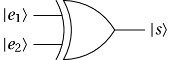

Jaime Villate. Faculdade de Engenharia da Universidade do Porto
O "C" em cbit (computational bit) indica que se está a falar de bits no sentido da computação tradicional. Um cbit corresponde à mínima informação que pode ser armazenada ou transmitida, em base binária. Cada cbit pode assumir dois valores, representados por 0 ou 1. Um conjunto de $n$ cbits pode assumir $2^n$ valores diferentes entre 0 e $2^n-1$.
O conteúdo dos $n$ cbits são $n$ algarismos binários, que podem ser representados usando um ket. Por exemplo, o conteúdo de um registo de 8 cbits pode ser:
\begin{displaymath} |01101011\rangle \end{displaymath}correspondente ao valor 107.
O caso mais simples, um circuito com entrada de um cbit, $|e\rangle$ e saída de um cbit $|s\rangle$, representa-se como uma função $f$ atuando no cbit de entrada e produzindo o cbit de saída: $|s\rangle=f(|e\rangle)$. Existem 4 possíveis funções $f$:
Com dois cbits de entrada, $|e_1e_2\rangle$ e um cbit de saída, $|s\rangle$, existem muitas mais possíveis funções (portas lógicas) $f(|e_1e_2\rangle)=|s\rangle$. Por exemplo o XOR (ou exclussivo), com a seguinte tabela de saídas para as possíveis entradas:

| $|e_1\rangle$ | $|e_2\rangle$ | $|s\rangle$ |
|---|---|---|
| 0 | 0 | 0 |
| 0 | 1 | 1 |
| 1 | 0 | 1 |
| 1 | 1 | 0 |
A operação XOR entre os dois cbits de entrada costuma ser representada também como uma soma a módulo 2:
\begin{displaymath} |e_1\rangle \oplus |e_2\rangle = |s\rangle \end{displaymath}ou seja, soma de números binários em que o resultado é apenas o último algarismo binário obtido.